SYDE 671 · Introduction to Computer Vision · Assignment 2
Fun with Filters and Frequencies
Convolution, edges, sharpening, hybrid images, and multiresolution blending
Abstract—Part One implements 2D convolution from scratch in NumPy, with four loops and with two loops, and checks both against scipy.signal.convolve2d (agreement to 2×10-15). It then finds edges in the cameraman image with finite differences, Gaussian smoothing, and derivative-of-Gaussian (DoG) filters; the single-convolution DoG filters reproduce the blur-then-difference result to 10-15. Gradient orientation is visualised in HSV with a hand-written arctangent (maximum error 1.1×10-5 rad). Part Two builds the unsharp mask as one convolution kernel, three hybrid images (Derek and Nutmeg, plus two pairs of painted character portraits), Gaussian and Laplacian stacks without downsampling, and Burt–Adelson multiresolution blending. The blending results are the Oraple, a face swap with an elliptical mask, a soft-mask blend that puts the Taj Mahal into the lenses of eyeglasses, and a straight-seam blend of two aligned faces.
Index Terms—convolution, finite differences, derivative of Gaussian, unsharp masking, hybrid images, Gaussian stack, Laplacian stack, multiresolution blending.
Part 1: Fun with Filters
1.1 Convolution from Scratch
Convolution flips the kernel \(k\) before sliding it over the image, so the output at pixel \((i,j)\) is
I implemented this with NumPy only: once with four nested loops (output row, output column, kernel row, kernel column) and once with two loops, where the inner double sum becomes one elementwise product and np.sum over a window. Both use zero padding, so the output has the same size as the input.
def pad_zero(img, kh, kw):
"""Zero-pad so a (kh, kw) kernel yields a same-size output (works for even sizes)."""
H, W = img.shape
out = np.zeros((H + kh - 1, W + kw - 1))
out[kh // 2 : kh // 2 + H, kw // 2 : kw // 2 + W] = img
return out
def conv_4loops(img, k):
kh, kw = k.shape
kf = k[::-1, ::-1] # convolution flips the kernel
p = pad_zero(img, kh, kw)
out = np.zeros(img.shape)
for i in range(img.shape[0]):
for j in range(img.shape[1]):
s = 0.0
for u in range(kh):
for v in range(kw):
s += p[i + u, j + v] * kf[u, v]
out[i, j] = s
return out
def conv_2loops(img, k):
kh, kw = k.shape
kf = k[::-1, ::-1]
p = pad_zero(img, kh, kw)
out = np.zeros(img.shape)
for i in range(img.shape[0]):
for j in range(img.shape[1]):
out[i, j] = np.sum(p[i : i + kh, j : j + kw] * kf)
return outk[::-1, ::-1]); without the flip the code computes correlation, which reverses the sign of Dx and Dy. Second, the padding is k//2 before the image and (k-1)//2 after it, so it also works for even-sized kernels such as Dx = [1, −1]. Padding by the same amount on both sides would shift those results by one pixel relative to SciPy.I tested on my own photo, read as grayscale and downsampled to 256×256 so the four-loop version finishes quickly. The kernels were a 9×9 box filter, Dx = [1, −1], and Dy = [1, −1]T.
| Kernel | 4 loops | 2 loops | SciPy | Max |difference| from SciPy |
|---|---|---|---|---|
| 9×9 box | 0.99 s | 0.13 s | 0.0063 s | 2.2×10-15 |
| Dx (1×2) | 0.03 s | 0.12 s | 0.0006 s | 0 |
| Dy (2×1) | 0.04 s | 0.12 s | 0.0007 s | 0 |
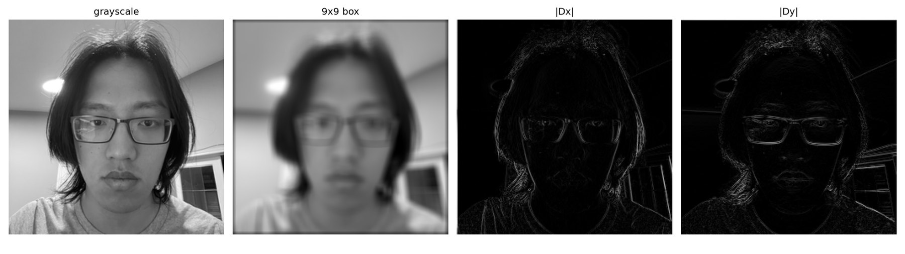
Runtime
For the 9×9 kernel the four-loop version is about eight times slower than the two-loop version, because the inner 81 multiplications run in Python. SciPy is roughly 20 times faster again than the two-loop version, since it runs compiled C. For the tiny 1×2 and 2×1 kernels the ordering flips: the four-loop version needs only two multiplications per pixel and is faster than the two-loop version, which pays the per-pixel overhead of slicing and calling np.sum. The two-loop version is therefore not always faster; it wins only when the kernel is large enough to amortise that overhead.
Boundary handling
Zero padding treats everything outside the image as black. This is why the box-filtered image has a dark border: pixels near the edge average in zeros. It also matches convolve2d(..., boundary="fill", fillvalue=0), which is why the comparison above is exact. For the edge-detection parts below I switch to symmetric (reflecting) boundaries, because zero padding would create a strong false edge along the whole image border where the intensity jumps to black.
1.2 Finite Difference Operator
Using Dx = [1, −1] and Dy = [1, −1]T, I convolved the cameraman image with scipy.signal.convolve2d to get the partial derivatives, then computed the gradient magnitude \(\sqrt{g_x^2+g_y^2}\) and binarized it.
def gradients(img):
# symmetric boundary: zero fill would create a fake bright edge along the image border
gx = convolve2d(img, Dx, mode="same", boundary="symm")
gy = convolve2d(img, Dy, mode="same", boundary="symm")
return gx, gy, np.hypot(gx, gy)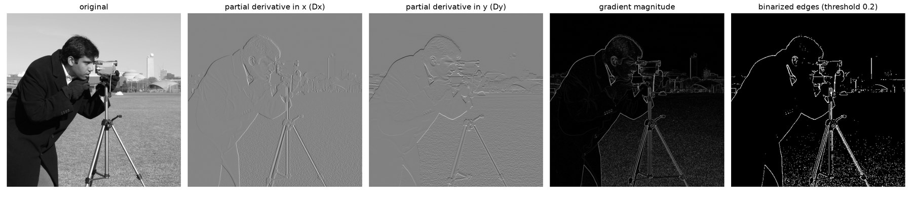
Choice of threshold
The gradient magnitude ranges up to 0.82 with a mean of 0.041. I tried thresholds from 0.05 to 0.30 and judged them by eye (Fig. 1.3). At 0.05 and 0.10 the grass becomes a field of noise. At 0.25 and above, real edges begin to disappear, such as the buildings on the skyline and parts of the coat. I chose 0.20 as the best trade-off: the tripod, camera, coat outline and skyline survive, and only a sparse speckle of grass noise remains. This is the noise that Gaussian smoothing removes in Part 1.3.
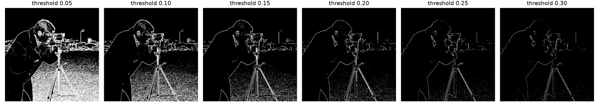
1.3 Derivative of Gaussian (DoG) Filter
The Gaussian is a 13×13 kernel with σ = 2, built as the outer product of a 1D kernel from cv2.getGaussianKernel with its transpose.
def gaussian2d(ksize=KSIZE, sigma=SIGMA):
g = cv2.getGaussianKernel(ksize, sigma) # (ksize, 1) column vector
return g @ g.TFirst I blurred the image and repeated the Part 1.2 procedure. Then I made the DoG filters by convolving the Gaussian with Dx and Dy (a full convolution, giving 13×14 and 14×13 filters) and applied each with a single convolution.
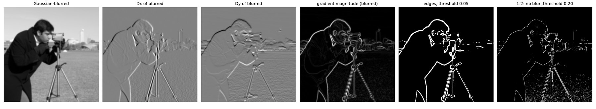
What changes with smoothing
The grass noise is gone entirely, so the threshold can drop from 0.20 to 0.05 (blurred gradients are smaller; their maximum is 0.17) while still giving a clean edge map. The edges are also thicker and smoother, since the blur spreads each edge over several pixels. The cost is lost detail: thin, low-contrast structure such as small buildings on the skyline and fine camera parts merges or disappears.
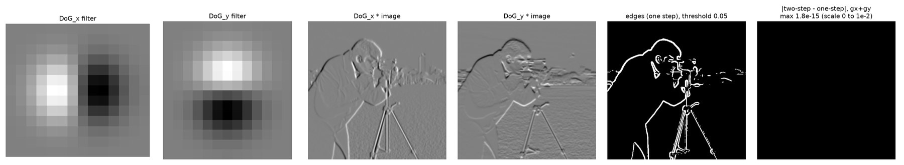
Verification
Convolution is associative, so \((f * G) * D = f * (G * D)\) exactly. In full-convolution mode the largest difference between the two routes is 9.7×10-16, and the binarized edge maps are identical. I used a symmetric boundary for the final images; the difference there is also about 10-15.
Bells and Whistles: Gradient Orientation
I visualise gradient orientation in HSV. Hue encodes the direction of the gradient, saturation is 1, and value is the gradient magnitude divided by its maximum, so flat regions (where the angle is meaningless) stay black. The assignment asks for this without built-in angle functions, so I wrote my own atan2. It uses the arctangent polynomial from Abramowitz and Stegun (4.4.49) on the ratio of the smaller to the larger component, which is at most 1, and then restores the quadrant with abs, comparisons and reflections. Against np.arctan2 on 200,000 random vectors its maximum error is 1.1×10-5 rad, which is invisible in a hue.
def my_atan2(y, x):
"""Angle of (x, y) in (-pi, pi], without built-in angle functions.
arctan(z) on [0, 1] uses the polynomial of Abramowitz & Stegun 4.4.49 (max error about 1e-5 rad);
the octant / quadrant is then recovered with abs, comparisons and reflections.
"""
ax, ay = np.abs(x), np.abs(y)
swap = ay > ax # keep the ratio z = small / large <= 1
num, den = np.where(swap, ax, ay), np.where(swap, ay, ax)
z = np.divide(num, den, out=np.zeros_like(num, dtype=float), where=den > 0)
z2 = z * z
a = z * (0.9998660 + z2 * (-0.3302995 + z2 * (0.1801410 + z2 * (-0.0851330 + z2 * 0.0208351))))
a = np.where(swap, np.pi / 2 - a, a) # angle in the first quadrant, [0, pi/2]
a = np.where(x < 0, np.pi - a, a) # reflect across the y axis
return np.where(y < 0, -a, a)
def orientation_hsv(gx, gy):
"""Hue = gradient direction, saturation = 1, value = normalized magnitude."""
ang = (my_atan2(gy, gx) % (2 * np.pi)) / (2 * np.pi)
mag = np.hypot(gx, gy)
hsv = np.dstack([ang, np.ones_like(ang), mag / mag.max()])
return hsv_to_rgb(hsv)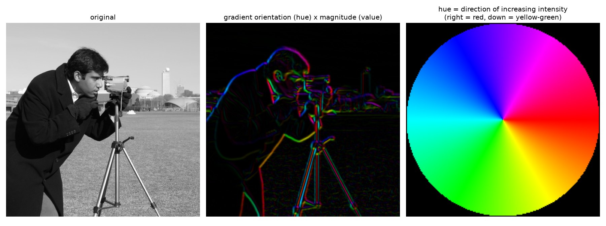
Two caveats. Hue is cyclic over the full 360°, so a dark-to-light edge and a light-to-dark edge along the same line receive opposite hues; edge orientation, defined only modulo 180°, would use half the circle. And hue is meaningless where the magnitude is near zero, which is why brightness is scaled by magnitude.
Part 2: Fun with Frequencies
2.1 Image Sharpening
A Gaussian filter keeps only low frequencies. Subtracting the blurred image from the original leaves the high frequencies, and adding a multiple of them back makes edges look stronger:
where δ is the impulse (identity) kernel. The right-hand form is the single unsharp mask kernel. I use the 13×13, σ = 2 Gaussian from Part 1.3, apply it to each colour channel, and clip to the displayable range.
def unsharp_kernel(G, alpha):
"""Single-convolution unsharp mask: (1 + alpha) * impulse - alpha * G."""
impulse = np.zeros_like(G)
impulse[G.shape[0] // 2, G.shape[1] // 2] = 1.0
return (1 + alpha) * impulse - alpha * G
def sharpen(img, G, alpha):
"""Apply the single unsharp kernel (clipped to the valid display range)."""
K = unsharp_kernel(G, alpha)
if img.ndim == 2:
out = convolve2d(img, K, mode="same", boundary="symm")
else:
out = np.dstack([convolve2d(img[..., c], K, mode="same", boundary="symm") for c in range(img.shape[2])])
return np.clip(out, 0, 1)The single kernel matches the three-step recipe img + α·(img − blur) to about 2×10-15 on both test images.
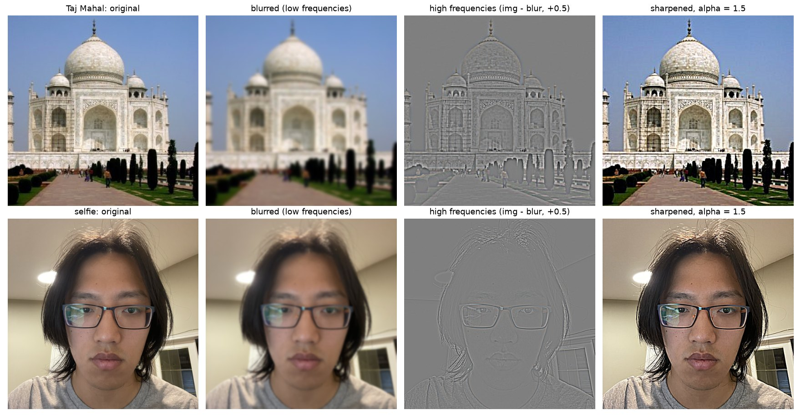
Varying the sharpening amount and the blur width
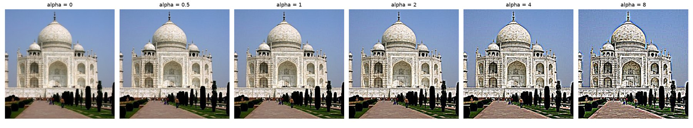
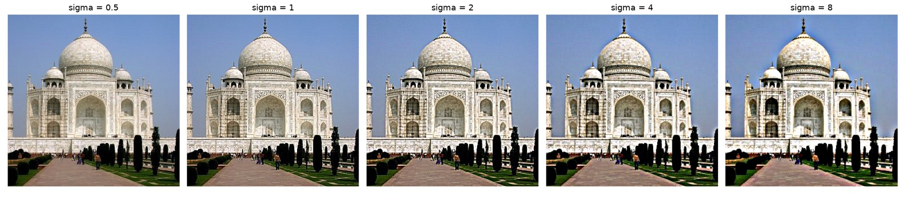
Evaluation: sharp, then blur, then sharpen
I blurred the sharp cameraman image with σ = 2 and tried to recover it with unsharp masking, sweeping α and measuring the mean squared error against the original.
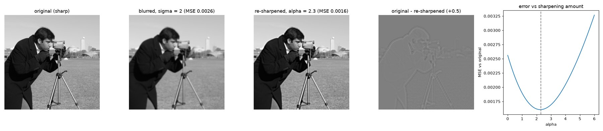
Sharpening reduces the error by about 37% (0.00256 to 0.00161), but never recovers the original. The difference image still shows outlines and ringing, and the error curve has a minimum at α = 2.3 and rises on either side, because beyond the optimum the overshoot adds new error. The main lesson is that unsharp masking can only boost frequencies that survived the blur; it cannot recreate detail the blur removed. The MSE-optimal α is also not the best-looking one; by eye, α around 1 to 2 looks best on the Taj image. The supplied Taj image is only mildly blurry, so its results are subtle at low α.
2.2 Hybrid Images
A hybrid image (Oliva, Torralba and Schyns, 2006) adds the low frequencies of one image to the high frequencies of another. Up close the high frequencies dominate perception; from far away only the smooth part survives. The low-pass part is a Gaussian-blurred image; the high-pass part is the image minus its own Gaussian blur.
def hybrid(low_img, high_img, s_low, s_high):
"""low-pass of one image + high-pass (image minus its own Gaussian blur) of the other."""
low = lowpass(low_img, s_low)
high = high_img - lowpass(high_img, s_high)
return np.clip(low + high, 0, 1), low, highAlignment
Alignment matters because it decides what the viewer groups together. For each image I picked two points (the eyes) from zoomed crops. A scale, rotation and translation that moves one image's two points onto the other's follows directly if points are treated as complex numbers: \(q = a\,p + t\), where |a| is the scale and arg(a) is the rotation. The reference image keeps its orientation, and the other image is warped onto it. Both go onto a common canvas.
def similarity(p, q):
"""2x3 matrix of the scale + rotation + translation that maps the two points p onto the two points q.
Treat points as complex numbers: q = a * p + t, where |a| is the scale and arg(a) the rotation.
"""
p, q = np.asarray(p, float), np.asarray(q, float)
a = complex(*(q[1] - q[0])) / complex(*(p[1] - p[0]))
t = complex(*q[0]) - a * complex(*p[0])
return np.array([[a.real, -a.imag, t.real], [a.imag, a.real, t.imag]])
def align(cfg):
"""Warp both images onto a common canvas so that their two eye points coincide."""
ref, oth = load_rgb(cfg["ref"]), load_rgb(cfg["oth"])
r = np.asarray(cfg["ref_pts"], float)
mid = r.mean(axis=0)
target = cfg["zoom"] * (r - mid) + np.asarray(cfg["anchor"], float) # reference eyes, zoomed, on the canvas
def warp(img, pts):
M = similarity(pts, target)
return np.clip(cv2.warpAffine(img.astype(np.float32), M, cfg["canvas"], flags=cv2.INTER_CUBIC,
borderMode=cv2.BORDER_REFLECT), 0, 1).astype(float)
return ref, oth, warp(ref, cfg["ref_pts"]), warp(oth, cfg["oth_pts"]), targetChoosing the cutoff frequency
The Gaussian low-pass of width σ pixels has a frequency response that is itself a Gaussian with standard deviation f = 1/(2πσ) cycles per pixel, so each σ corresponds to a cutoff frequency. The two widths are chosen independently for the low-pass and high-pass parts. The test of a good choice is the “distance strip”: the hybrid shrunk to 50%, 25% and 12% to simulate viewing from farther away.
Hybrid 1 (full process): Derek and Nutmeg
Derek supplies the low frequencies and Nutmeg the high frequencies, with σlow = 10 (f = 0.016) and σhigh = 5 (f = 0.032).
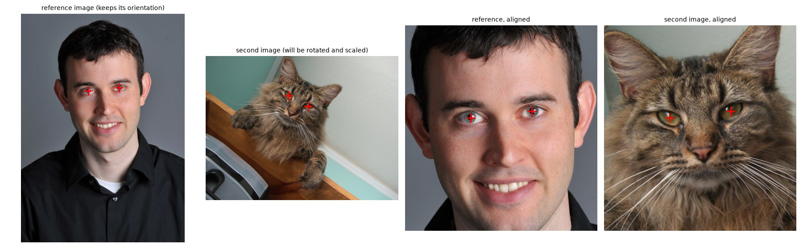
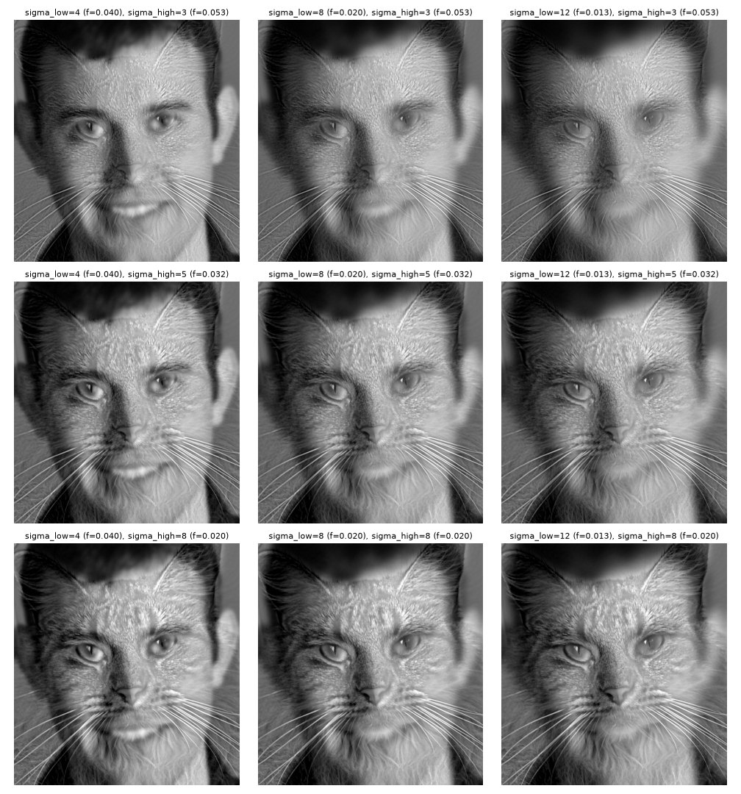
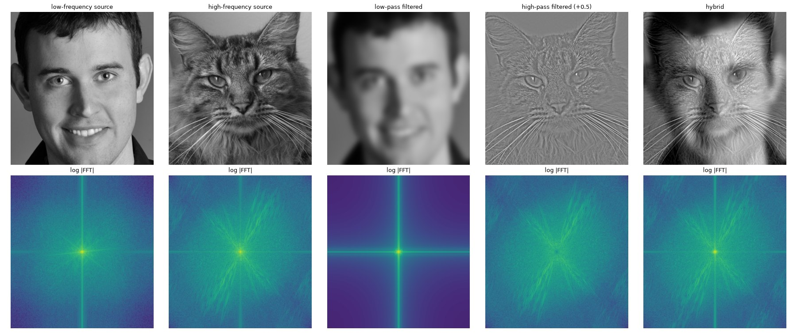
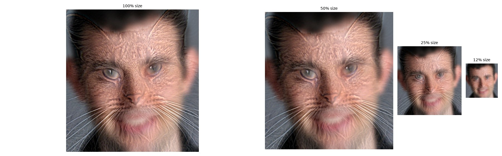
Bells and whistles: colour
I compared grayscale with colour in the low-frequency part only, the high-frequency part only, and both.
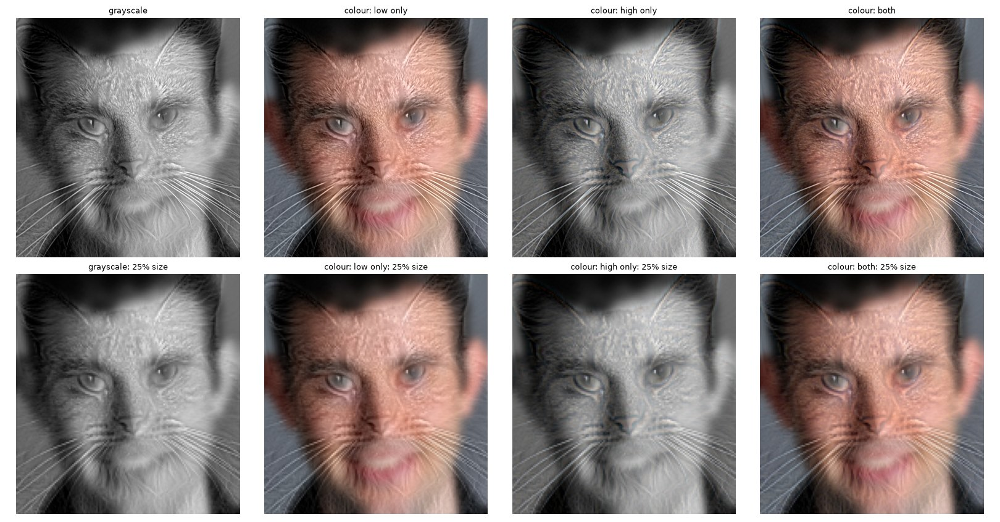
Colour on the low-frequency part works best. It supplies Derek's skin tone and makes him very recognisable at 25% size. Colour on the high-frequency part is almost invisible, because fine detail carries little colour that the eye can resolve, and “both” looks nearly the same as “low only”. The trade-off is that low-only colour tints the cat's face with skin tone, which weakens the cat reading up close.
Hybrids 2 and 3: two pairs of painted character portraits
The other two hybrids use painted game-card portraits. These are low-resolution sources (the faces are only about 50 px wide), so they were enlarged about 3.5× before filtering. I looked for pairs with similar pose, framing and tonal layout, since those match the low-frequency structure. Eye points were read from zoomed crops: Xiao Qiao (262, 148), (293, 151); Cao Zhi (296, 177), (332, 186); Zhao Yun (262, 202), (297, 204); Zhao Tong (126, 326), (168, 321).
Which image goes where. I tested both directions for each pair. The best results put the crisp, line-rich painting in the high-frequency (near) role and the soft, colour-rich painting in the low-frequency (far) role. A soft image has too little fine detail to carry the near view.
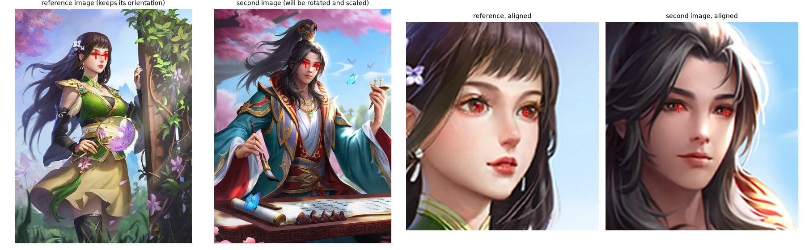
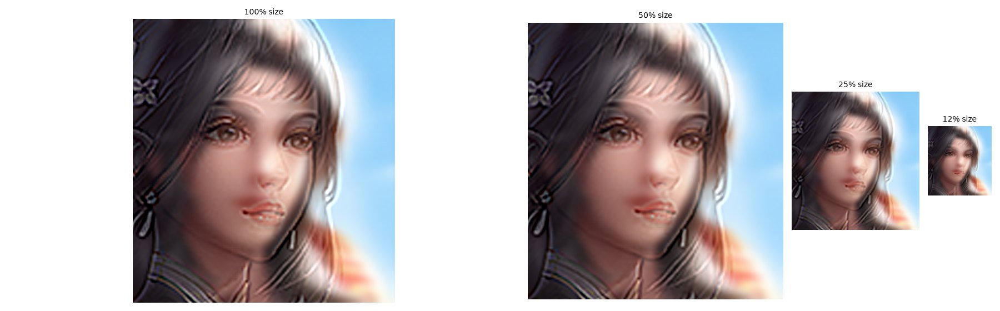
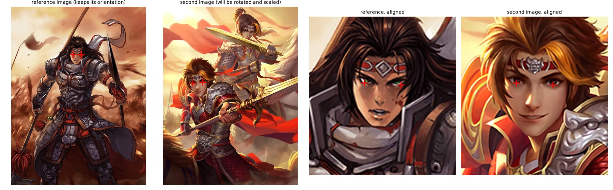
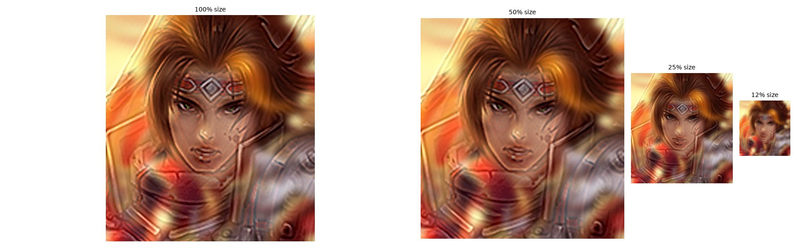


For both pairs, I chose σlow = 8 and σhigh = 4 from the sweeps (linked above). A small σlow (4) lets the far image's edges overlap the near image's; a large one (12) leaves the far image as shapeless blobs. A very small σhigh (2) keeps only the finest lines, so the near image loses facial structure, and a larger one (6) pulls in mid-frequency shading that competes with the far image.
2.3 Gaussian and Laplacian Stacks
A stack is a pyramid without downsampling: every level has the original size. The Gaussian stack blurs the original with widths σ = 0 (the image itself), 2, 4, 8, 16, 32, so the blur doubles each level as it would in a pyramid whose resolution halves. The Laplacian stack takes differences of neighbouring levels, \(L_i = G_i - G_{i+1}\), and keeps the last Gaussian level as a residual, so the levels sum back to the original. No built-in pyramid function is used.
def blur(img, sigma):
"""Separable Gaussian blur on a 2D or HxWxC array, reflecting at the border."""
if sigma == 0:
return img.copy()
k = cv2.getGaussianKernel(int(6 * sigma) | 1, sigma).ravel()
return convolve1d(convolve1d(img, k, axis=0, mode="reflect"), k, axis=1, mode="reflect")
def gaussian_stack(img, sigmas=SIGMAS):
return [blur(img, s) for s in sigmas]
def laplacian_stack(img, sigmas=SIGMAS):
"""Band-pass levels G_i - G_{i+1}; the last level is the remaining low-pass image, so the levels sum to img."""
g = gaussian_stack(img, sigmas)
return [g[i] - g[i + 1] for i in range(len(g) - 1)] + [g[-1]]Three checks, all passing: the Laplacian stack sums back to the image with maximum error 1.1×10-16; blending an image with itself returns it (1.4×10-16); and blending with an all-ones mask returns the first image (2.2×10-16).
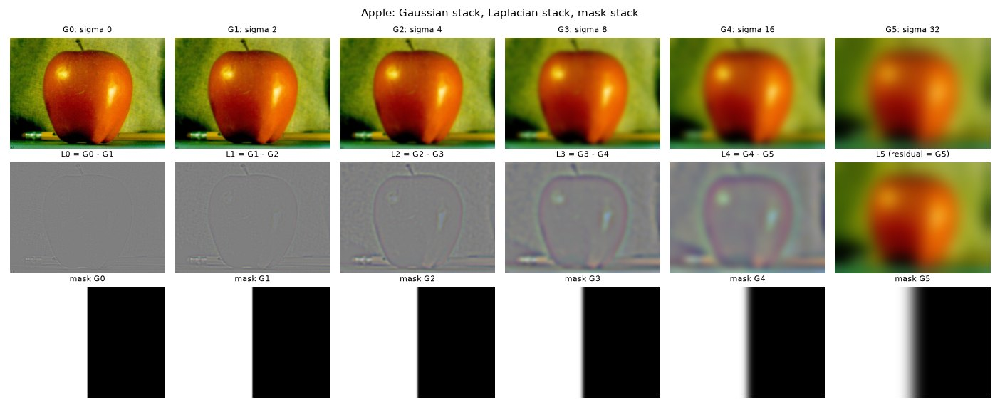
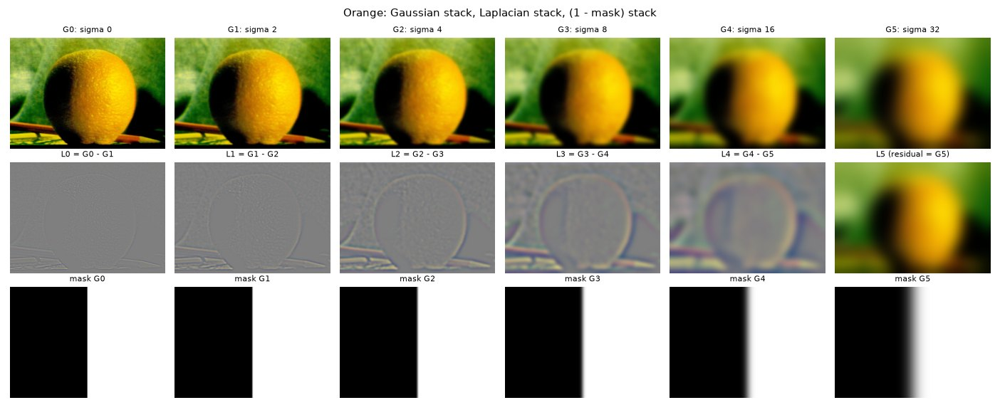
Stack observations
The Gaussian rows show the expected progression from fine texture to broad colour and shape: the peel texture and sharp silhouette remain at small σ, while at σ = 16 and 32 only the fruit's coarse form and background remain. The Laplacian rows isolate the information removed between adjacent Gaussian levels. Fine bands contain the peel texture and narrow edges; middle bands contain the fruit boundary and highlights; the final residual carries the lowest-frequency colour and illumination. At the same time, the Gaussian mask changes from a hard half-image step to an increasingly wide transition. This scale matching is the key to the later blend: fine details switch sides close to the seam, while broad colour and shading change gradually over a much wider region.
Recreating Szeliski Figure 3.42
Figure 3.42 shows the Laplacian blend level by level. Rows are levels 0, 2 and 4 (high, medium and low frequencies); the left and middle columns are the apple and orange weighted by the smooth masks, and the right column is their sum. The bottom row shows the whole masked apple, the whole masked orange, and the final blend.
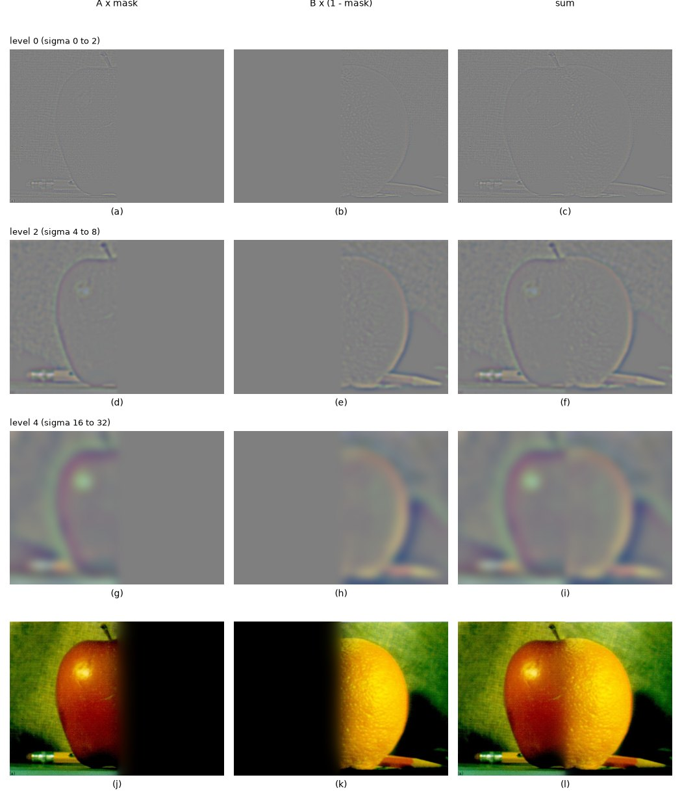
2.4 Multiresolution Blending
Following Burt and Adelson (1983), I blend two images A and B with a mask M. With stacks in place of pyramids, the page-226 algorithm leaves a visible seam, because there is no downsample–blur–upsample step to soften the mask. Instead I use the page-230 algorithm: build a Gaussian stack of the mask as well, and blend each band with its own mask level,
def blend(a, b, mask, sigmas=SIGMAS):
"""Burt & Adelson multiresolution blend using stacks: sum_i GM_i * LA_i + (1 - GM_i) * LB_i."""
return sum(gm * la + (1 - gm) * lb
for gm, la, lb in zip(gaussian_stack(mask, sigmas), laplacian_stack(a, sigmas), laplacian_stack(b, sigmas)))The Oraple
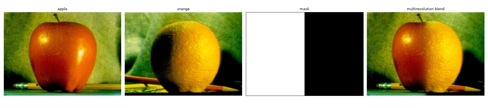
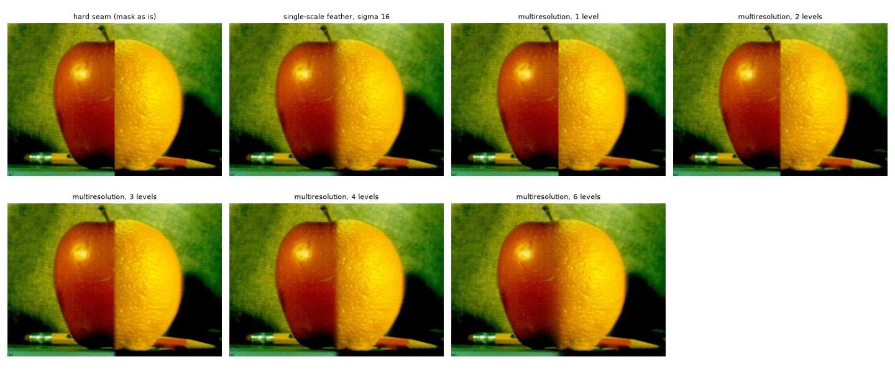
Bells and whistles: colour
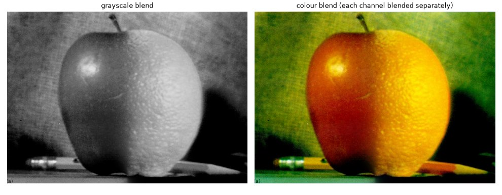
Colour improves this blend because hue is part of the objects' identity. In grayscale, the similar brightness and round silhouettes make the two halves look like one generic fruit. Blending the red, green and blue channels separately preserves the red apple and orange peel while using the same scale-dependent seam in every channel. The result keeps the useful texture transition without producing a separate coloured edge at the join. This is more effective than converting a finished grayscale blend back to colour, because that would not preserve the distinct low-frequency colour fields of the two source images.
Custom blends
The three custom blends use the same blend function with different masks. In all of them, where the mask is 1 the result takes image A.
Irregular mask 1: Taj Mahal in the glasses. The mask is a pair of soft ellipses (value 0.75) over the two lenses of my glasses, and image A is the Taj Mahal pasted into the lens areas. The mask value below 1 keeps the eyes faintly visible through the lenses, like a reflection. This is my favourite result.
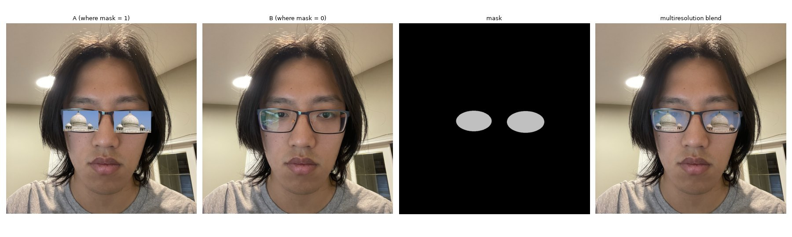
Result. The elliptical shapes follow the glasses closely, so the blend reads as a reflection rather than a rectangular paste. The Gaussian mask stack softens the building at the lens boundaries, while the fine bands retain enough of the frames and eyes to keep the glasses recognizable. The mask value of 0.75 provides a useful compromise between a visible Taj Mahal and believable transparency.
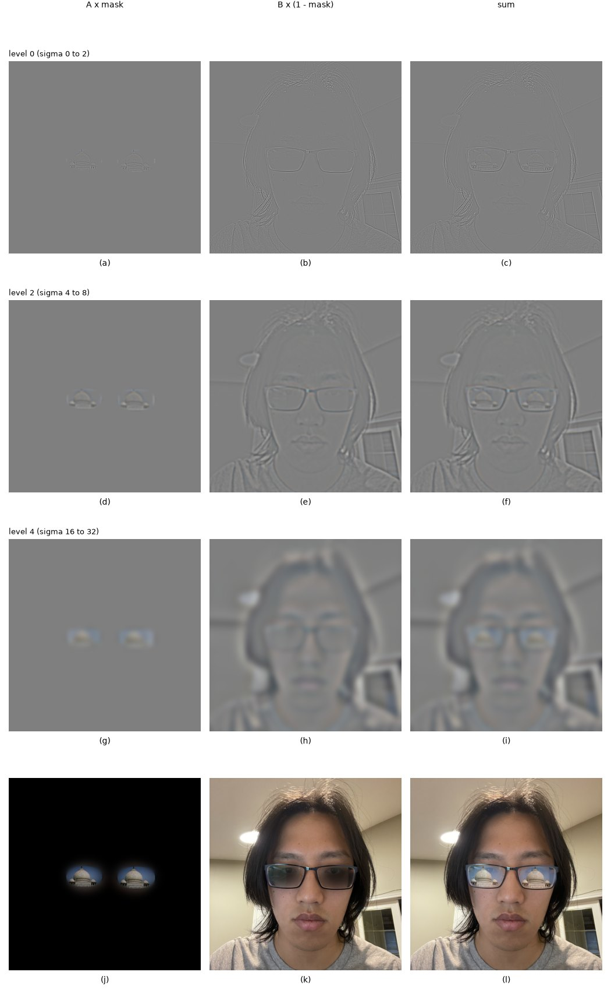
Irregular mask 2: face swap. Cao Zhi's face goes inside Xiao Qiao's hair and background through an elliptical mask, with the two portraits aligned on the eyes.
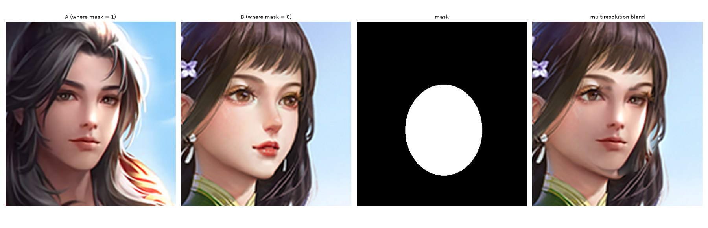
Result. Aligning the eyes before blending keeps the main facial features in a plausible position, and the oval mask keeps Xiao Qiao's hair, ornament and background intact. The boundary is least noticeable across the cheeks and forehead, where both paintings have smooth shading. It is more visible near the jaw and hairline because the two faces have different poses, skin tones and lighting. This shows that multiresolution blending can hide a seam, but it cannot correct geometric or illumination mismatch between the sources.
Straight seam: two faces. Da Qiao and Sun Ce, aligned on the eyes, joined along a vertical seam through the middle of the face. The seam itself is smooth. The halves do not fully match, because the two characters are in different poses and the lighting differs.
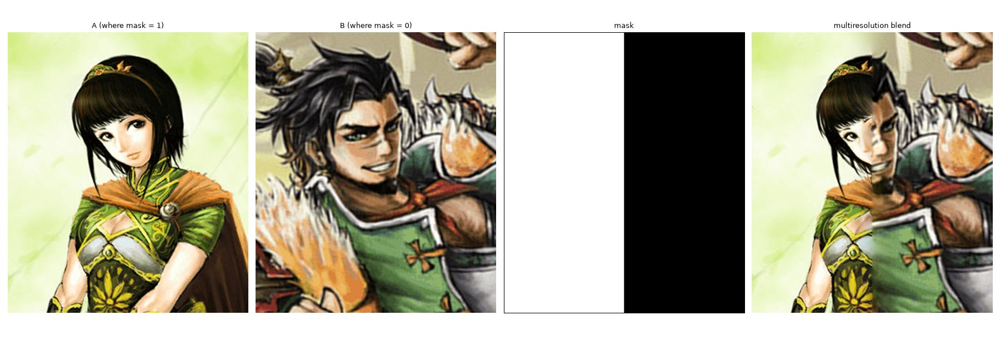
Limitations
The Derek and Nutmeg hybrid is clean, but the two hybrids made from painted portraits are weaker. The faces are small and the sources are low-resolution, and the painted style has a lot of mid-frequency detail, so the transition between near and far is only moderate. In the Cao Zhi and Xiao Qiao hybrid, the near image's outlines remain faintly visible at 12% size. Eye points and mask shapes were placed by hand and checked by eye, not found automatically. The unsharp-mask evaluation uses a single image. The Taj image used for sharpening is only mildly blurry.
What I Learned
Sharpening, hybrid images and multiresolution blending are the same idea applied three times: split an image into frequency bands, treat each band separately, and add them back. Unsharp masking boosts one band; hybrids swap the bands of two images; blending uses a different mask width for each band. Once I wrote everything as differences of Gaussians, the stacks and the sharpening kernel turned out to be the same operation. The second lesson was practical: algebraic identities make good tests. Associativity of convolution, a stack that sums back to the image, and a blend of an image with itself all gave exact answers to about 10-15, which is a quick, unambiguous check that the code is right. Looking at the figures caught a different kind of mistake: for example, my first colour wheel for the orientation figure was flipped vertically, and only the picture showed it. Choices such as σ, α and the threshold could only be made by looking at sweeps, and the best-looking value was not the same as the error-minimising one.
Files, Sources, and Credits
Run any script from this folder with python part1_1.py and so on, in an environment with the packages in requirements.txt. Figures are written to outputs/; the web copies on this page are in media/.
Image sources. Derek and Nutmeg are from the course starter code (Hoiem's Computational Photography class). The apple and orange are from Burt and Adelson (1983). The cameraman image is the standard test image from the scikit-image repository, and the Taj Mahal image is from the course. The portraits used in Parts 2.2 and 2.4 are Three Kingdoms character card art, used here only for coursework; the artwork belongs to its artists and publisher. The selfie is my own.
- P. J. Burt and E. H. Adelson, “A multiresolution spline with application to image mosaics,” ACM Trans. Graphics, vol. 2, no. 4, pp. 217–236, 1983.
- A. Oliva, A. Torralba and P. G. Schyns, “Hybrid images,” ACM Trans. Graphics (SIGGRAPH), vol. 25, no. 3, pp. 527–532, 2006.
- R. Szeliski, Computer Vision: Algorithms and Applications, 2nd ed., Springer, 2022, Fig. 3.42.
- M. Abramowitz and I. A. Stegun, Handbook of Mathematical Functions, formula 4.4.49.